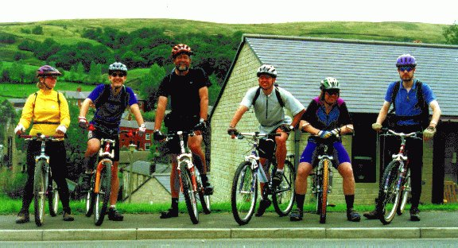
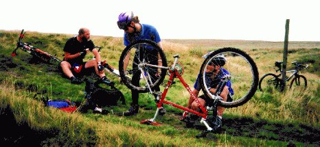
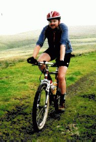
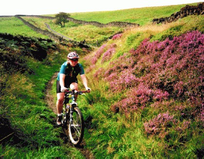
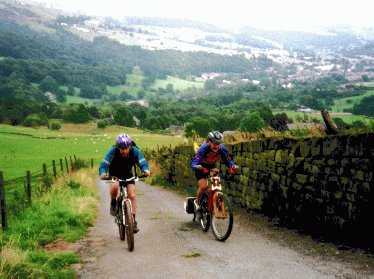

August 1998
This weekend of Aug 29th-30th was a three-day weekend for us, as the Monday was a bank holiday. Simon and I went up north to the Pennines (a small mountain range in northern England) to attend a mountain biking weekend hosted by Matt, who lives in the little village of Walsden (near Manchester).
On Friday we drove up (with fellow Cambridge resident Tony) and hung around with Matt. Shaun and Dave soon showed up, and we had fish & chips from the nearby chippy for dinner. Dave had ridden most of the way from York (ended up being about 60 miles) on his new bike (Kona Explosif) and was feeling a little saddle sore.
|  |
| The riders: me, Shaun, Tony, Dave, Vince, Matt (Simon took the picture) |
Saturday morning Vince showed up, and all of us except Simon went for a ride (Simon went for a hike instead). The weather was was cool and cloudy the whole day. The ride started from Matt's place. Walsden is located by a river in the bottom of the valley. Matt lives partway up the side of the valley. We started by coasting down to the bottom, then climbing out the other side. The first part of the climb was on road, and then we hit dirt. This was a really tough climb, being both steep and rocky. Since Dave's new bike was about the same size as mine, we swapped bikes for the first part of the ride. So I was trying to cope with a somewhat strange bike (actually, it's not all that different from the way I have my Trek 950 set up) on difficult terrain. I walked over the toughest obstacles, fell at least once, and put my foot down lots of times. And I bashed Dave's new pedals against the rocks quite a bit. When I finally got to the top I traded back, both because I wanted my old familiar bike back, and because I was afraid that I'd scratch or otherwise damage his new bike.
|  |
| Matt fiddles with the strange bike |
Matt was also on a strange bike. Shaun had bought a new Specialized full suspension bike, so he brought along his old Specialized full suspension bike for Matt to try out. Matt had up until then always ridden a rigid bike. Matt liked the front suspension but complained that the soft rear made the bike "climb like a dog".
Then we went along a bunch of trails. Matt had borrowed a digital camera from work and was taking lots of pictures of us, often asking us to repeat bits for the camera. We were mostly up on the moors, surrounded by heather in lovely purple bloom. The tracks included lots of double track, some rocky ups and downs, and some very wet sections. I handled most of this OK, though not terribly fast. There were a few bits I didn't clean. It was nice to have tracks where I couldn't ride everything. Around Cambridge where I live it's so flat and there are so few obstacles that I almost never have to put my foot down.
Dave was complaining of a sore bum and left to head back to Matt's place about 1/3 of the way through the ride.
At one point I came over the brow of a hill and skirted around the edge of a thick-black-looking mess. Vince was laughing as he tried to scrape some of the evil-looking black stuff off himself. He'd clearly crashed going through the puddle. Then the truth came out: he'd gone through it successfully, only to be asked by Matt to repeat it for the camera. Unfortunately the second time around he found a rather deeper section, and endoed into it.
And then it was my turn. We were going along a track with a puddle in it. The puddle was a bit deeper than I'd expected, and my front wheel went down and stopped. Ooooops. I flew over the handlebars and landed on my head, then rolled onto my left side on soft ground. I warned Matt and Tony, who came after me, to avoid the puddle... My head and neck felt a bit funny for a bit afterwards.
Finally, after about 24 miles and 3000 feet of climbing (according to my Cateye altimeter) we came back to where we started, the top of that initial climb. And, you know, those darned rocks were just as hard to go down as up! So I dabbed alot more and fell once or twice, but at least this time it was my own bike I was risking damaging.
We washed our bikes down, and Shaun showed Matt how to adjust the rear shock to be less soft. After pots of tea we went to the village pub for dinner and had a very nice time with good food and beer. They were playing music from the 70s and 80s, and we were having fun trying to identify the band and song.
On Sunday the weather was warm and sunny. We split up. A guy named Mark (whom I've traded emails with but never met) joined the fast group (Shaun, Matt and Vince) for the day, while Simon and Tony and I went off on our own. Dave stayed off the bike, going for a walk. My group followed a route that Matt had highlighted on our map. We did pretty well at it, only getting very slighly off the route once. This day's initial climb was much less technical, with a road climb followed by a gentle dirt road. We debated a bit about which fork we were supposed to be taking, and Tony pointed out some features of the land that corresponded with the topo map and made it clear where we were supposed to go.
|  |
| Simon on the farm track |
We found ourselves on a track on a hillside, which skirted some deep cuts in the hill. I was riding these bits, while Simon and Tony were walking, so I got a fair bit ahead. I was going down into one of these cuts (a very shallow one) and suddenly I found myself going over the bars. I don't know why; it's very annoying when this happens. Unfortunately, the inside of my right thigh hit the stem pretty hard as I went over. I landed, and the bike was on top of me. My internal assessment said that I was basically OK, but my leg really hurt. I looked at the bike and thought about trying to get it off me. But I thought that it would probably hurt trying to move just then, and the guys would be along soon to rescue me. I looked along the trail expectantly. I waited. Finally I saw Tony's head. He asked if I was OK, and I asked him to take the bike off me. He did, and I slowly straightened myself one, sitting up. Arrrggggh... That hurt. After a minute or two I stood up and pushed my bike for a few meters. But the track was perfectly rideable, and I didn't want to get into the habit of walking, so I got on the bike, pedalling very slowly. I somehow negotiated the other cuts reasonably well, although I dabbed much more often.
Finally the track petered out and became basically an indentation in the grass. I remembered a few times where, given a choice, I'd taken the upper track when it branched. So I wondered if there might be a better track further down. We looked, and we saw it. We walked down to it, and life got much easier, as this was a broad farm track. We took this to a road.
We wanted to get a pub lunch. Usually pubs stop serving food at 2pm, and it was about 1:30. Our marked route had us going on a track over some hills to get to a pub. According to the map there was another pub nearby, and it was accessible by roads, going up only one hill. So we decided to go for that. We got there pretty quickly, but it was closed. Very closed, it looked like it hadn't been open for months. So we aimed for the pub on our original route, which was down in a valley and accessible by roads from where we were. When we got there it was well after 2pm, but the pub was still open. Evidently they serve food all day. I felt pretty unenthusiastic when we got there. As we waited for them to bring out our food, I lay my head down on the picnic table (using the map for a pillow) and rested, feeling very sleepy. Finally the food came, and we ate that and dessert.
|  |
| Me on the hillside track |
Finally, it was time to go. I felt unenergetic, but it wasn't bad enough to suggest going back to Matt's place on the road, so we hauled ourselves up another big hill to get to some more dirt. I was really limping from the crash when we started out, but riding loosened up my leg and I felt all right. Then there was this really nice track along a hillside. Mostly it went down, but there were some up bits too. The most challenging parts are where the path is paved. Sort of. There were big rocks (about 1.5 feet by 2 feet) laid out side by side to form a surface. Matt says that these slabs are from the days when the trails were packhorse trails-they're not modern, although many have been restored. Of course the edges of the slabs weren't even, and there were some sections where a few stones were missing and big puddles formed, making the way really tricky. I rode most of these sections. Finally, some more track and a bit of road, and we were down in the valley that Walsden is in, and we went along the canal path to get back to Matt's place, having gone about 16 miles for the day (and an unknown amount of climbing; I forgot to check the meter).
When we got back we found Vince there: evidently, the superfast guys had taken a pace that really tired him out, so when he got to the village where we had lunch he found a cafe, had something to eat, and headed back via almost exacly the same route that we did. Soon after, the superfast guys showed up, having gone thirty something miles. Matt says they would have gone even further if they hadn't been out the previous day. Geez. He also decided that he liked the full suspension bike, with the now firmer setting of the rear shock.
After showers, Matt cooked us all pasta, and we ate, drank beer, and later looked at photos of the day's ride. The wonders of digital photography!
On Monday it was cool and breezy, but sunny. We were all feeling a little lethargic. Dave needed to take the train back to York and wanted to catch the train from Hebden Bridge, a village about 6 miles away. Shaun wanted to try out Matt's Bob Yak trailer. So we hit on a plan. Dave put his panniers in the Yak, which Shaun pulled. Matt rode his old rigid bike to remind himself what it was like after spending two days on a full suspension rig.
We went along the canal path to Hebden Bridge, stopped frequently to take pictures of each other and the bikes. Shaun noted that Dave never sat down as he pedalled... We had a nice lunch at a cafe at the train station, and then we said farewell to Dave.
|  |
| Matt & Shaun chug up the hill |
Of course we couldn't go back along the canal path (much too wimpy), so we went up up up to get to a track on top of the moors. The climb was on pavement, but it was extremely steep. Matt estimated that it might be as steep as one in three in the worst bits. Part of it was cobbled. I made it up without putting my foot down, although I was going at a speed where it would probably have been faster to walk. I was in my lowest gear, and only managed to keep the pedals turning by making sure that I pulled back on the pedals at the bottom of the stroke. Matt and Shaun also made it up without putting feet down, but they went much faster than I did.
We went along the top for awhile, then down again. The descent started out off-road. This bit was rocky, and I had to put my foot down in a few places, and even walk tiny bits. Then we continued the descent on road, and then started going up again. When the ascent went off-road it was more of the paving slabs that we'd seen the previous day. Except that the slope was steeper, and we had to go up them. Yeesh, I'm going up that? Well, yes, and to my surprise, I managed it. I pushed the bike over one or two big obstacles, but otherwise I did it, even the steepest bit at the top. Of course Matt (on his rigid bike) and Shaun (pulling a now-empty Yak trailer) made it up as well, again faster than me.
There was a very short section at the top, and then it was downhill along more paving stones. I carried the bike over one section where a paving stone was replaced by a puddle of unknown depth, and I lifted it over some steep concrete water bars at an angle to the direction of travel. Otherwise I made it down allright, if a bit slowly. I was following Matt. I could have gone a bit faster, but as I was in no hurry I stayed behind him. I was surprised that Matt was actually slowing me down slightly. Matt is a much better rider than I am in all areas, and it was clear that my excellent Pace suspension fork was allowing me to keep up with him almost effortlessly. I had never imagined that better technology could ever bring me up to his level, but it did. However, Matt had decided to buy Shaun's leftover full-sus rig, so this is an experience that won't be repeated.
Then it was a road descent into Walsden, than the short climb to Matt's place. A short shower, stray clothes stuffed into our bags, a final cup of tea, and we were on the road back to Cambridge.
More ride stories